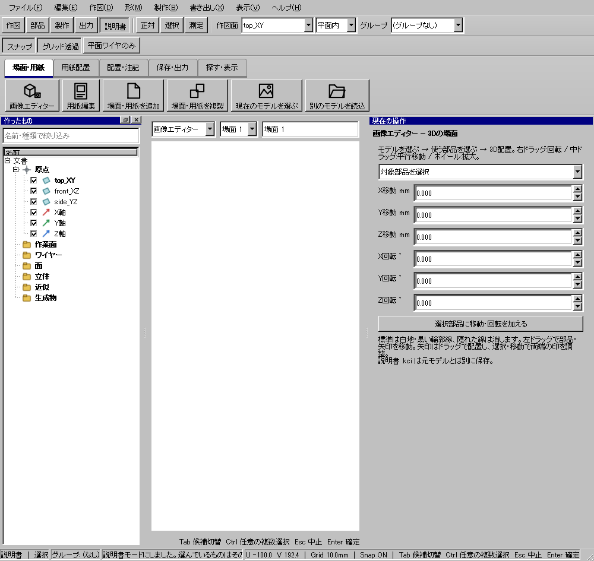
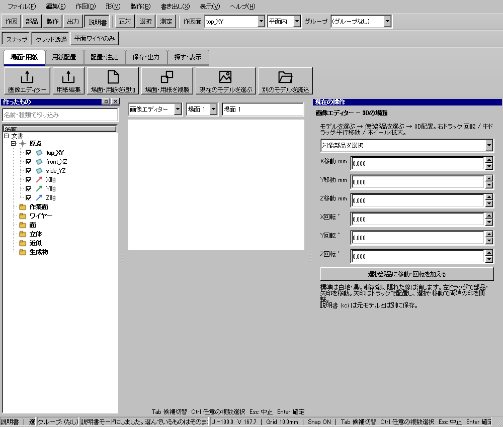
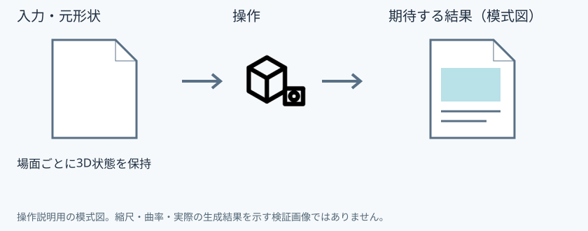

車体の組立場面を作る
使う機能：画像エディター
3D部品・矢印・文章を配置する場面の編集です。用紙サイズを決める段階とは分かれており、場面は複数個を別々に作れます。
部品を配置した場面を作れる。用紙への配置とは別に編集する。
1 準備 — 元の図形から作る
車体と屋根のモデルを用意する。
まだ用意できていなければ、次の手順を先に行ってください。既にモデルがある場合も、例の座標・大きさ・面の向きを自分のモデルへ読み替えます。
- 3D場面から画像入りの組立説明書を作る — 図形の作成から順に練習できます。
練習前にKCD2を別名保存します。数値の長さはmm、角度は度です。平面内のu/vと世界XYZを区別します。
2 使う道具を開く — 押す場所
- 説明書 → 画像エディター
別の入口：Ctrl+K → 画像エディターを検索 → 候補の用途を確認して開きます。別モードなら「全モードから探す」をオンにします。


この実画面は既存操作試験の一場面で、下の数値例の完成画像とは限りません。
3 操作手順 — 一つずつ進める
モデルを保存する
車体と屋根など複数部品のKCD2を用意し、保存します。
画面で確認：元設計と説明書の保存先は別です。
画像エディターへ移る
説明書モードから画像エディターを選び、場面・用紙を追加で場面を作ります。
画面で確認：用紙編集でなく場面が編集中です。
使用部品を選ぶ
現在のモデルを選ぶで候補を取り込み、使用部品へチェックを入れます。
画面で確認：チェックだけでは場面へ入っていません。
場面へ配置する
「この場面に配置」を押します。
画面で確認：選んだ3D部品が場面に現れます。
部品と視点を整える
選択・移動で屋根を離し、視点を整えます。数値移動・回転は現在位置への加算です。
画面で確認：元のKCD2での設計位置を変更しません。
矢印と文章を入れる
矢印の始点と終点を置き、番号・文章で組立方向を説明します。文字のフォントや太字を指定します。
画面で確認：矢印の一端と全体の移動を使い分けます。
次の工程を作る
場面を複製し、配置と文章を次の工程へ変更します。説明書をKCIへ保存します。
画面で確認：複数場面を別々に編集できます。
4 設定する欄と数値
ボタン名・欄名と、今回使う値を対応させてください。項目が出ていない場合は作り方・モードが合っているか確認し、ペイン内をスクロールします。
| 見る欄・役割 | この例の設定と意味 |
|---|---|
| 現在のモデルを選ぶ | 部品候補を取得 |
| 使用部品 | チェック |
| この場面に配置 | 実際に追加 |
選択の確認：役割欄の名前と3Dの強調を照合します。重なって拾いにくい時はTabで候補を替えます。全体を使う例では左一覧の要素名を選び、3Dの1辺選択と区別します。

5 確定して結果を確認
上記の場面／用紙ごとのボタンまたは配置クリックで操作します。モデル作成用のEnter確定と同じだと思わず、編集対象の名前を確認します。
部品を配置した場面を作れる。用紙への配置とは別に編集する。
形を作る操作では、元と結果の名前を分けて一覧で確認し、必要に応じて元を一時非表示にします。表示だけの機能では形状や要素数を変えることが目的ではありません。
6 取消・やり直し・保存
未確定の配置・ドラッグはEscで取り消します。説明書内の確定済み編集はUndoで戻し、モデル側の履歴とは区別します。
モデルの編集正本はKCD2、説明書の編集正本はKCIです。外部へ出力するだけの機能では、出力ファイルと編集元を両方残してください。
進めない場合 — 症状から戻る場所を探す
| 起きていること | 確認して直す場所 |
|---|---|
| チェックだけで出ない | 配置ボタンを押す |
| 用紙を動かした | 画像エディターと用紙編集の選択を確認 |
この機能の入力条件：文書がありません。
計算中は処理表示を見ます。失敗が出たら、対象・入力条件を変えずに何度も押すのでなく、案内にある対象と条件を確認します。
参考画面の出典と確認範囲
試験名：HP-COMMAND 台帳の全コマンドが同じ入口から呼べる。試験全体の結果：passed。画像はコマンド呼出し直後で、入力待ち・下見の場合もあります。各段階の完成証拠ではありません。